Cis,Trans Isomerism in Cycloalkanes and Bicycloalkanes
In this section we introduce the concept of stereoisomerism. Stereoisomers are compounds that have (1) the same molecular formula, (2) the same connectivity of their atoms, (3) but a different orientation of their atoms in space. Recall that constitutional isomers, the only other type of isomers we have studied so far, also have the same molecular formula but a different connectivity. The difference between constitutional isomers and stereoisomers are summarized in the following table. We begin our study of stereoisomers with the study of cis,trans isomerism in cycloalkanes.
| Isomers: Different compounds with the same molecular formula | |
| Constitutional isomers: Different compounds with the same molecular formula but a different connectivity | Stereoisomers: Different compounds with the same molecular formula, the same connectivity, but a different orientation of their atoms in space |
Cis,Trans Isomerism in Cycloalkanes
Cycloalkanes with substituents on two or more carbons of the ring show a type of stereoisomerism called cis,trans isomerism, which we can illustrate by considering 1,2-dimethylcyclopentane. In the following structural formulas, the cyclopentane ring is drawn as a regular pentagon viewed through the plane of the ring. Carboncarbon bonds of the ring projecting toward you are shown as heavy lines.
In one isomer of 1,2-dimethylcyclopentane, the methyl groups are on the same side of the ring; in the other, they are on opposite sides of the ring. The prefix cis (Latin: on the same side) indicates that the substituents are on the same side of the ring; the prefix trans (Latin: across) indicates that they are on opposite sides of the ring. The cis isomer cannot be converted to the trans isomer, and vice versa, without breaking and reforming one or more bonds, a process that does not occur at or near room temperature. The cis isomer is approximately 7.1 kJ (1.7 kcal)/mol higher in energy (less stable) than the trans isomer because of the steric strain of the methyl groups on adjacent carbons in the cis isomer.
We say that 1,2-dimethylcyclopentane has two stereocenters. A stereocenter is an atom, most commonly carbon, about which exchange of two groups produces a different stereoisomer. Both carbons 1 and 2 of 1,2-dimethylcyclopentane, for example, are stereocenters; in this molecule, exchange of H and CH3 groups at either stereocenter converts a trans isomer to a cis isomer, or vice versa. Alternatively, we refer to the stereoisomers of 1,2-dimethylcyclobutane as having either a cis or a trans configuration. Configuration refers to the arrangement of atoms about a stereocenter. We say, for example, that exchange of groups at either stereocenter in the cis configuration gives a stereoisomer with the trans configuration.
Two cis,trans isomers are possible for 1,4-dimethylcyclohexane. For the purposes of determining the number of cis,trans isomers in substituted cycloalkanes, it is adequate to draw the cycloalkane ring as a planar polygon as is done here.
We can also draw the cis and trans isomers of 1,4-dimethylcyclohexane as non-planar chair conformations. In working with alternative chair conformations, it is helpful to remember that all groups axial in one chair become equatorial in the alternative chair, and vice versa. In one chair conformation of trans-1,4-dimethylcyclohexane, the two methyl groups are axial; in the alternative chair conformation, they are equatorial. Of these chair conformations, the one with both methyl groups equatorial is more stable by approximately 14.6 kJ (3.5 kcal)/mol and makes up the large majority of a sample of trans-1,4-dimethylcyclohexane.
The alternative chair conformations of cis-1,4-dimethylcyclohexane are of equal energy. In one chair, one methyl group is equatorial and the other is axial.
In the alternative chair, the orientations in space of the methyl groups are reversed. The result is that a collection of cis-1,4-dimethylcyclohexane molecules is composed of rapidly equilibrating alternative chairs in equal proportions.
(these conformations are of equal stability)
Cis,Trans Isomerism in Bicycloalkanes
By far the most common bicycloalkanes, and the ones we concentrate on in this section, are decalin and hydrindane (Section 2.4B).

Two stereoisomers of decalin and hydrindane are possible depending on whether the two hydrogen atoms at the ring junction are trans or cis to each other. If we draw conformations for the six-membered rings in the two decalins, we see that each ring can exist in its more stable chair conformation. In trans-decalin, the hydrogens at the ring junction are axial to both rings; that is, the ring-junction hydrogen above the plane of the rings is axial to ring A and to ring B. Likewise, the ring-junction hydrogen below the plane of the ring is axial to both rings. The situation is different in cis-decalin. Each ring-junction hydrogen is axial to one ring but equatorial to the other ring.
Let us look more closely at trans-decalin, by far the more common stereoisomer of decalin. An important feature of this bicycloalkane is that each ring is locked into one chair conformation; neither ring can invert to its alternative chair. This means, for example, that if an —OH group is equatorial in a decalinol (a decalin alcohol), it remains equatorial; it cannot become axial because the cyclohexane ring is locked into this one conformation. Likewise, if an —OH group is axial, it remains axial.
Suppose you are given the structural formula on the left for the decalinol. Can you tell from looking at this structure whether the !OH group is axial or equatorial? You can’t tell directly, but you can figure it out. Remember that, in trans-decalin, the H atoms at the ring junctions are axial to each ring. Remember also that in a chair cyclohexane, axial is up on one carbon, down on the next, up on the next, and so on. Therefore, if you start with the axial group at either ring junction and work your way from one carbon to the next until you come to the carbon bearing the —OH group, you come to the conclusion that the —OH on the structural formula is equatorial to ring A. A good example of the occurrence of these types of ring systems is in the steroids, all of which contain a carbon skeleton consisting of three six-membered rings and one five-membered ring connected as shown here. This ring system is present in both animal and plant steroids. Steroids are present in human metabolism as cholesterol, steroid hormones, and bile acids (Section 26.4).
Nature is by no means limited to carbon atoms in six-membered rings. Tetrodotoxin, one of the most potent toxins known, is composed of a set of interconnected six-membered rings, each in a chair conformation. All but one of these rings have atoms other than carbon in them. Tetrodotoxin is produced in the liver and ovaries of many species of Tetraodontidae, especially the puffer fish, so called because it inflates itself to an almost spherical spiny ball when it is alarmed. The puffer fish is evidently a species that is highly preoccupied with defense, but the Japanese are not put off. They regard the puffer, called “fugu” in Japanese, as a delicacy. To serve it in a public restaurant, a chef must be registered as sufficiently skilled in removing the toxic organs so as to make the flesh safe to eat. Symptoms of tetrodotoxin poisoning begin with attacks of severe weakness, progressing to complete paralysis and eventual death. Tetrodotoxin blocks sodium ion channels, which are essential for neurotransmission. This prevents communication between neurons and muscle cells and results in the fatal symptoms described.

Following are two stereorepresentations for cholestanol. In the conformational representation on the right, notice that all ring junctions are trans, all groups at each ring-junction atom are axial to the ring, and the !OH group on ring A is equatorial.
Another type of bicycloalkane is a six-membered ring in which an added CH2 group forms a bridge between carbons 1 and 4. You can view and draw this molecule from any number of perspectives. What becomes obvious if you view it from the side, as in (c), is that the one-carbon bridge locks the six-membered ring into a boat conformation. Notice that, even though (a) and (b) show the carbon skeleton of the molecule, it is not obvious from them that a locked boat conformation is embedded in the molecule. The lesson here is that it is essential to draw a molecule as a three-dimensional shape to best reveal what you want to show.
An example of a natural product containing this bicyclic skeleton is camphor.
Another example of a carbon skeleton that contains several six-membered rings, all of which are locked into chair conformations, is adamantane (c). To understand how the carbon skeleton of adamantane can be constructed, imagine that you (a) start with a chair cyclohexane, (b) add the three axial bonds on the top side of the ring, and (c) then connect each of the axial bonds to a CH group. You now have adamantane, a compound first isolated from petroleum. Amantadine, a 1° amino derivative of adamantane, is an antiviral agent used to treat influenza A.

(an antiviral agent)